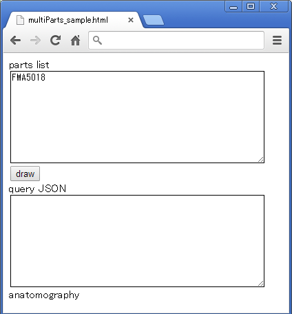
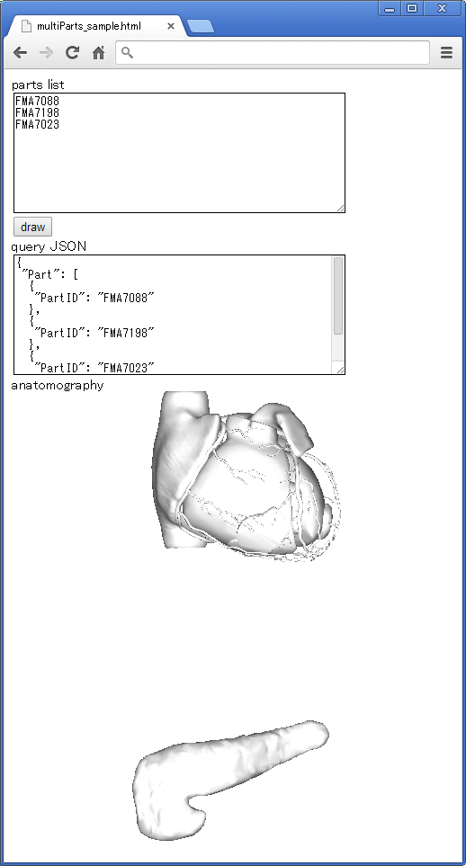

Anatomography Map API サンプルコード - html + javascript - 複数のパーツを描画する
概要単一のパーツではなく、複数のパーツから構成される画像を描画します。パーツはソースコード上で固定ではなく、ウェブページ上のフォームで自由に入力できるようにします。サンプルコード空のhtmlファイルを作成し、テキストエディタで以下の内容をコピー＆ペースト、保存して下さい。
<html>
<head>
<!-- load google hosted jquery library -->
<script src="http://ajax.googleapis.com/ajax/libs/jquery/2.0.3/jquery.min.js"></script>
<script type="text/javascript">
$(function() {
var bp3dApiBase = "http://lifesciencedb.jp/bp3d/API/";
var method = "image"; // define API method
$("#drawbutton").click(function () { // define button click event
var queryObj = new Object(); // define object for query JSON
queryObj["Part"] = new Array(); // define part as array
var partsAry = $("#partslist").val().split(/\r\n|\r|\n/); // get parts list from textarea and split by linefeed
for (var i = 0; i < partsAry.length; i++) { // for loop to deal each parts
if (partsAry[i].length == 0) { // in case of empty line
continue; // nothing to do
}
var partObj = new Object(); // define new part object
partObj["PartID"] = partsAry[i]; // set PartID of part object as
queryObj["Part"].push(partObj); // add part object to json object
}
var jsonString = JSON.stringify(queryObj, null, " "); // convert json object to JSON string
$("#json").val(jsonString); // display JSON string in textarea
$("#anatomography").attr('src', bp3dApiBase + method + "?" + jsonString); // update img src to show anatomography
});
})
</script>
</head>
<body>
parts list<br />
<!-- text area of part id list for drawing -->
<textarea id="partslist" rows="10" cols="50" >FMA5018</textarea><br />
<button id="drawbutton">draw</button><br />
query JSON<br />
<!-- text area for requested JSON string -->
<textarea id="json" rows="10" cols="50" ></textarea><br />
anatomography<br />
<!-- img tag to show anatomography -->
<img id="anatomography" src=''>
</body>
</html>
 parts list内に1行に1つパーツ名を入力して、drawボタンを押すと、下記のようにJSON文字列および、入力したパーツが描画された画像が表示されます。JSON文字列に複数のパーツが記述されている点を確認して下さい。  複数のIDを記述した時のJSON文字列は下記のようになっています。
{ JSONオブジェクトとして渡すため{で始めます
"Part": [ パーツの定義をするために"Part"というキーに対する配列（[で始まり）を定義します
{ 1番目のパーツをオブジェクトとして定義します（オブジェクトなので{で始まる）
"PartID": "FMA7088" 1番目のパーツの"PartID"キーに対して"FMA7088"という値を設定します
}, 1番目のパーツ定義を終了（}）し、配列要素の区切り文字（,）を記述します
{ 2番目のパーツをオブジェクトとして定義します（{で始まる）
"PartID": "FMA7198" 2番目のパーツの"PartID"キーに対して"FMA7198"という値を設定します
}, 2番目のパーツ定義の終了（})および配列要素の区切り文字（,)を記述
{ 3番目のパーツをオブジェクトとして定義します（{で始まる）
"PartID": "FMA7023" 3番目のパーツの"PartID"キーに対して"FMA7023"という値を設定します
} 3番目のパーツ定義の終了（})。配列要素の最後なので区切り文字（,）は不要
] パーツ定義配列の終了（]）文字で閉じます
} JSONオブジェクトを終了文字（})で閉じます
応用var method = "image";という行の"image"を"animation"に変更してウェブブラウザで表示してみて下さい。 |